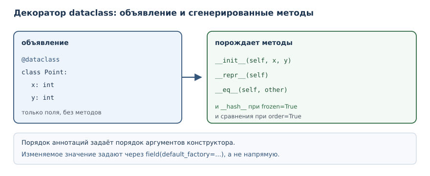
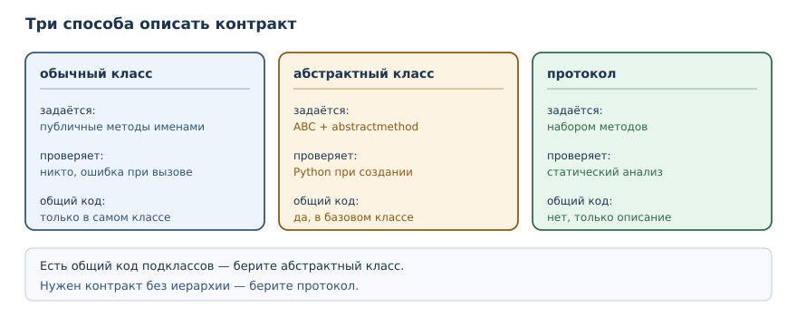

Dataclasses, протоколы и абстрактные классы
Практичные инструменты описания типов данных и контрактов: dataclass, namedtuple, абстрактные базовые классы и протоколы.
В этой главе
В прошлой главе вы вручную писали __repr__, __eq__ и __hash__ для
простого класса с двумя полями. Для класса данных это утомительно и
однообразно: одни и те же методы повторяются от класса к классу, а любое
изменение поля требует правки в нескольких местах. Стандартная библиотека
предлагает инструменты, которые убирают эту работу: dataclass порождает
методы из объявления полей, namedtuple даёт компактную неизменяемую запись,
а абстрактные классы и протоколы позволяют описывать контракты явно. В этой
главе вы научитесь выбирать подходящий инструмент, а не писать всё руками.
29.1 Зачем это нужно
Класс данных встречается постоянно: точка, товар, заказ, настройки, строка
отчёта. У такого класса почти всегда нужны одинаковые вещи: конструктор с
полями, читаемое представление, сравнение по значению и, если объект
неизменяем, хеш. Писать это вручную — значит повторять один и тот же код и
ошибаться в мелочах: забыть поле в __eq__, перепутать порядок аргументов,
добавить метод сравнения и не обновить хеш.
Второй мотив — контракты. Функция, которая принимает «объект с методом
area», никак не сообщает об этом читателю. Общий базовый класс или
протокол делает требование явным: видно, какие методы обязательны, и видно,
когда класс им не соответствует. Контракт нужен не ради формальности, а
чтобы ошибка обнаруживалась раньше — при чтении кода и при проверке, а не
в момент вызова с реальными данными.
29.2 Что вы сможете после этой главы
- объявлять классы данных через
@dataclassи понимать, какие методы при этом появляются; - правильно задавать значения по умолчанию, включая изменяемые;
- использовать неизменяемый dataclass для значений, которые должны быть хешируемыми;
- применять
namedtupleтам, где нужна совсем короткая запись; - описывать обязательный интерфейс абстрактным базовым классом;
- описывать интерфейс протоколом, не требуя наследования, и объяснять разницу между этими подходами.
29.3 Dataclass: данные без церемоний
dataclass — класс, автоматически получающий __init__, __repr__ и
сравнение по объявленным полям.
@dataclass — декоратор из модуля dataclasses, превращающий
объявленный класс в dataclass.
Поля объявляются переменными класса с аннотациями типа. Аннотация здесь работает как объявление поля: по ней декоратор понимает, что перечислять в конструкторе.
from dataclasses import dataclass
@dataclass
class Point:
x: int
y: int
p = Point(3, 4)
print(p)
print(p == Point(3, 4))
print(p.x, p.y)
Point(x=3, y=4)
True
3 4
Декоратор сгенерировал три метода. __init__ принимает оба поля,
__repr__ печатает их имена и значения, __eq__ сравнивает по значениям.
Обратите внимание: сравнение работает «из коробки», хотя в прошлой главе для
этого пришлось писать метод вручную.
В dataclass можно добавлять собственные методы — он остаётся обычным классом:
from dataclasses import dataclass
@dataclass
class Point:
x: int
y: int
def distance_from_origin(self):
return (self.x ** 2 + self.y ** 2) ** 0.5
print(Point(3, 4).distance_from_origin())
print(Point.__dataclass_fields__.keys())
5.0
dict_keys(['x', 'y'])
Атрибут __dataclass_fields__ хранит описание полей. Он существует, но
обращаться к нему в прикладном коде почти никогда не нужно: это внутренняя
деталь, которая понадобится только своим инструментам.

Значения по умолчанию и default_factory
Значение по умолчанию указывают прямо у поля. Но изменяемое значение вроде списка объявить так нельзя, и это правильная защита — та же ловушка, о которой шла речь в главе 18:
from dataclasses import dataclass
@dataclass
class Order:
items: list = []
print(Order())
ValueError: mutable default <class 'list'> for field items is not allowed: use default_factory
Сообщение подсказывает решение: default_factory. Это функция, которая
вызывается для каждого нового экземпляра и создаёт отдельное значение:
from dataclasses import dataclass, field
@dataclass
class Order:
title: str
items: list = field(default_factory=list)
paid: bool = False
a = Order("Первый")
b = Order("Второй")
a.items.append("книга")
print(a)
print(b)
print(a.items is b.items)
Order(title='Первый', items=['книга'], paid=False)
Order(title='Второй', items=[], paid=False)
False
Списки разные, поэтому добавление в первый заказ не затронуло второй. Порядок полей тоже важен: значения по умолчанию обязаны идти после полей без умолчания. Нарушение приводит к ошибке при объявлении класса.
from dataclasses import dataclass
@dataclass
class Point:
x: int = 0
y: int
print(Point(1, 2))
TypeError: non-default argument 'y' follows default argument 'x'
Неизменяемый dataclass
Неизменяемый dataclass — dataclass с frozen=True: после создания
атрибуты изменить нельзя, объект хешируем.
from dataclasses import dataclass
@dataclass(frozen=True)
class Point:
x: int
y: int
p = Point(1, 2)
print(p)
print(hash(p) == hash(Point(1, 2)))
print(len({p, Point(1, 2)}))
Point(x=1, y=2)
True
1
Неизменяемый dataclass получает __hash__ автоматически, потому что его
поля нельзя изменить и хеш не «уедет». Две равные точки схлопываются в
множестве в одну. Попытка записать поле отклоняется:
from dataclasses import dataclass
@dataclass(frozen=True)
class Point:
x: int
p = Point(1)
p.x = 5
dataclasses.FrozenInstanceError: cannot assign to field 'x'
Такие классы хорошо подходят для значений-справочников: координат, денежных сумм, идентификаторов, настроек, которые не должны меняться после создания.
Замена и словарь полей
Неизменяемость не означает «нельзя получить изменённый вариант». Модуль
dataclasses даёт две функции: replace создаёт копию с изменёнными полями,
а asdict превращает объект в обычный словарь.
from dataclasses import dataclass, replace, asdict
@dataclass(frozen=True)
class Point:
x: int
y: int
p = Point(1, 2)
q = replace(p, y=5)
print(p)
print(q)
print(asdict(p))
Point(x=1, y=2)
Point(x=1, y=5)
{'x': 1, 'y': 2}
replace пригодится, когда нужно «изменить одно поле» у неизменяемого
значения: создаётся новый объект, старый остаётся прежним. asdict полезен
на границе программы — при сериализации в JSON или при передаче в код,
который ожидает словарь. Обратное превращение делают обычным конструктором:
Point(**{"x": 1, "y": 2}).
29.4 namedtuple: компактная неизменяемая запись
namedtuple — кортеж с именованными полями: компактная неизменяемая запись.
from collections import namedtuple
Point = namedtuple("Point", "x y")
p = Point(3, 4)
print(p)
print(p.x + p.y)
print(p._asdict())
Point(x=3, y=4)
7
{'x': 3, 'y': 4}
namedtuple создаёт новый тип-кортеж. У него есть поля по именам, но нет
методов, которые вы бы объявили сами: это лёгкая структура. Он занимает
меньше памяти, чем dataclass, и остаётся обычным кортежем — его можно
распаковать и передать туда, где ожидается последовательность.
| Инструмент | Изменяемость | Методы | Когда выбирать |
|---|---|---|---|
| словарь | изменяемый | нет | одноразовая структура, набор параметров |
namedtuple |
неизменяемый | минимальный набор | короткая запись, совместимая с кортежем |
| dataclass | по умолчанию изменяемый | любые, свои | сущности с поведением и валидацией |
frozen dataclass |
неизменяемый | любые, свои | значения-справочники, хешируемые ключи |
29.5 Интерфейс и контракт
Интерфейс — набор операций, которые объект предоставляет внешнему коду.
Интерфейс есть у любого класса, даже если он нигде не описан: это просто
перечень публичных методов. Проблема в том, что у неописанного интерфейса
нет ни документа, ни проверки. Если функция ожидает метод area, узнать об
этом можно только из её тела, а класс без такого метода обнаружится лишь при
вызове.
Явный контракт решает обе задачи. Его описывают двумя способами: через абстрактный базовый класс, если нужны наследование и общее поведение, или через протокол, если достаточно набора методов.
29.6 Абстрактный базовый класс
Абстрактный базовый класс — класс, задающий обязательный интерфейс и не позволяющий создать экземпляр без реализации абстрактных методов.
from abc import ABC, abstractmethod
class Shape(ABC):
@abstractmethod
def area(self):
...
class Square(Shape):
def __init__(self, side):
self.side = side
def area(self):
return self.side ** 2
print(Square(3).area())
9
Класс Shape наследует ABC и объявляет area абстрактным. Создать
Shape() нельзя: интерпретатор проверяет, реализованы ли все абстрактные
методы, и отказывается создавать «недоделанный» объект.
from abc import ABC, abstractmethod
class Shape(ABC):
@abstractmethod
def area(self):
...
print(Shape())
TypeError: Can't instantiate abstract class Shape without an implementation for abstract method 'area'
Та же проверка срабатывает для подкласса, который забыл реализовать метод:
from abc import ABC, abstractmethod
class Shape(ABC):
@abstractmethod
def area(self):
...
class Broken(Shape):
pass
print(Broken())
TypeError: Can't instantiate abstract class Broken without an implementation for abstract method 'area'
Абстрактный класс удобен, когда у подклассов есть общее поведение: его
реализуют в базовом классе, а абстрактными оставляют только те методы,
которые обязаны различаться. Например, у фигур может быть общий метод
описания, который вызывает абстрактную area.
29.7 Структурная типизация и протоколы
Наследование — не единственный способ заявить о соответствии контракту. Проверять можно не родословную, а набор методов.
Структурная типизация — совместимость типов по набору операций («утиная типизация», проверяемая статически), а не по наследованию.
Протокол — абстрактное описание интерфейса для структурной типизации: класс соответствует протоколу, если реализует его методы.
from typing import Protocol
class HasArea(Protocol):
def area(self) -> float:
...
class Square:
def __init__(self, side):
self.side = side
def area(self) -> float:
return float(self.side ** 2)
def total(shapes):
return sum(shape.area() for shape in shapes)
print(total([Square(2), Square(3)]))
13.0
Класс Square не наследует HasArea, но соответствует протоколу: у него
есть метод area. Функция total принимает любые объекты с таким методом.
Протокол описывает требование, не добавляя классу поведение и не создавая
иерархию.
Проверить соответствие протоколу во время выполнения можно, если пометить
его @runtime_checkable:
from typing import Protocol, runtime_checkable
@runtime_checkable
class HasArea(Protocol):
def area(self) -> float:
...
class Square:
def area(self) -> float:
return 1.0
print(isinstance(Square(), HasArea))
print(isinstance(42, HasArea))
True
False
isinstance с протоколом проверяет только наличие методов, а не их
сигнатуры: число 42 не имеет area, поэтому результат False. Без
@runtime_checkable такая проверка поднимает TypeError. Сам протокол
создать нельзя — это описание, а не класс:
from typing import Protocol
class HasArea(Protocol):
def area(self) -> float:
...
print(HasArea())
TypeError: Protocols cannot be instantiated

Ограничения протоколов
У протокола есть цена, о которой стоит знать заранее. Во-первых,
isinstance с @runtime_checkable проверяет только имена методов и
вызываемость: класс с методом area(self, depth) пройдёт проверку, хотя
использовать его как площадь нельзя. Во-вторых, протокол ничего не даёт во
время выполнения, кроме этой грубой проверки: он не ограничивает класс и не
мешает объявить несовместимую сигнатуру. Полноценная проверка возможна
только статическими анализаторами, которые читают аннотации.
Отсюда практическое следствие: протокол полезен как документ и как средство проверки для инструментов, но не заменяет тесты. Если функция зависит от поведения, а не только от имени метода, нужен либо общий базовый класс с реализацией, либо явная проверка предусловий.
У абстрактного класса свои ограничения. Он требует наследования, а значит, создаёт зависимость: подкласс обязан импортировать базовый класс. Если классов-реализаций много и они живут в разных модулях, иерархия становится обузой. Кроме того, множественное наследование от нескольких абстрактных классов быстро усложняет порядок разрешения методов — тему прошлой главы.
29.8 Что выбрать
Инструменты решают разные задачи, и выбор зависит от того, что важнее.
| Задача | Инструмент | Почему |
|---|---|---|
| хранить набор полей | @dataclass |
конструктор, repr и сравнение бесплатно |
| значение-справочник | @dataclass(frozen=True) |
неизменяемость и хеш |
| короткая запись, совместимая с кортежем | namedtuple |
минимум памяти и кода |
| общий код плюс обязательные методы | абстрактный базовый класс | наследование и проверка при создании |
| контракт без наследования | протокол | классы не зависят от базового |
Практическое правило: начинайте с dataclass для данных и с протокола для контракта. Абстрактный базовый класс берите тогда, когда подклассы действительно делят код, а не только названия методов. Наследование ради проверки «реализован ли метод» чаще всего избыточно: протокол решает ту же задачу без жёсткой связи.
Инструменты хорошо сочетаются. Dataclass может наследовать абстрактный
класс, если у значений общий контракт, и может сам реализовать протокол,
просто объявив нужные методы. В одном проекте нормально встретить все три
подхода: настройки как frozen dataclass, семейство обработчиков с общим
абстрактным классом и протокол для внешних источников, которые нельзя
заставить наследоваться. Выбор — не религия, а ответ на вопрос «какая связь
здесь действительно нужна».
29.9 Типичные ошибки
- Забыть декоратор
@dataclass. Класс с аннотациями полей без него остаётся обычным: конструктора,reprи сравнения не появится. - Объявить изменяемое значение по умолчанию. Список или словарь прямо
в объявлении поля даёт
ValueError; нуженdefault_factory. - Нарушить порядок полей. Поле без значения по умолчанию не может идти после поля со значением.
- Ждать изменяемости от
frozen=True. Запись в поле поднимаетFrozenInstanceError; для изменения создают новый объект. - Считать
isinstanceс протоколом полной проверкой. Он смотрит только на имена методов и не проверяет сигнатуры. - Объявлять абстрактный класс без нужды. Если общего кода нет, протокол проще и не создаёт иерархию.
- Оставлять
...вместо реализации в подклассе. Абстрактный метод обязан быть переопределён, иначе экземпляр не создастся.
29.10 Упражнения
1. Прогноз вывода
Определите, что напечатает программа, и объясните, какие методы породил декоратор:
from dataclasses import dataclass
@dataclass
class Book:
title: str
year: int
b = Book("Питон", 2026)
print(b)
print(b == Book("Питон", 2026))
print(b.title, b.year)
2. Dataclass для товара
Объявите dataclass Product с названием, ценой и количеством. Создайте два
товара, сравните их и напечатайте. Добавьте метод total(), возвращающий
цену, умноженную на количество.
3. Список в заказе
Объявите dataclass Order с названием и списком позиций. Список должен
создаваться отдельно для каждого заказа. Добавьте позицию в первый заказ и
покажите, что второй остался пустым. Объясните, зачем нужен
default_factory.
4. Неизменяемая точка
Объявите dataclass Point с frozen=True. Проверьте, что две равные точки
дают одинаковый хеш и множество схлопывает их в один элемент. Покажите, что
присваивание полю отклоняется.
5. namedtuple для координат
Создайте namedtuple с полями x и y, напечатайте его, сумму координат и
словарь полей. Сравните объём кода с dataclass из упражнения 4.
6. Абстрактная фигура
Объявите абстрактный базовый класс Shape с абстрактным методом area и
подкласс Circle. Убедитесь, что экземпляр Shape создать нельзя, а
экземпляр Circle — можно.
7. Протокол без наследования
Объявите протокол HasArea с методом area и два класса, которые его не
наследуют, но реализуют метод. Напишите функцию, суммирующую площади, и
проверьте её на обоих классах.
8. runtime_checkable
Пометьте протокол из упражнения 7 декоратором @runtime_checkable.
Проверьте isinstance для класса с методом area и для числа. Объясните,
что именно проверяет isinstance в этом случае.
9. Анализ: dataclass или обычный класс
Для трёх сущностей — настройки приложения, счёт в банке, точка на карте — выберите инструмент и обоснуйте выбор. Для каждой ответьте, нужны ли изменяемость, проверка инвариантов и хеширование.
10. Мини-проект: каталог книг
Объявите dataclass Book (название, автор, год) и класс Catalog со
списком книг и методом by_author(name). Добавьте две книги разных авторов
и одну повторную, напечатайте результат фильтра и объясните, почему
dataclass удобнее словаря в этом проекте.
29.11 Проверка понимания
- Какие методы порождает
@dataclassи от чего зависит их состав? - Почему изменяемое значение по умолчанию для поля запрещено и что предлагается взамен?
- Что даёт
frozen=Trueи почему такой класс можно хешировать? - Чем
namedtupleотличается от dataclass по назначению? - Что такое интерфейс и зачем описывать его явно?
- Чем протокол отличается от абстрактного базового класса?
29.12 Что дальше
Вы умеете описывать данные и контракты. Последняя глава части собирает эти инструменты в практику проектирования: в «Проектирование классов и API» речь пойдёт о связности, связанности, композиции и дизайне исключений.